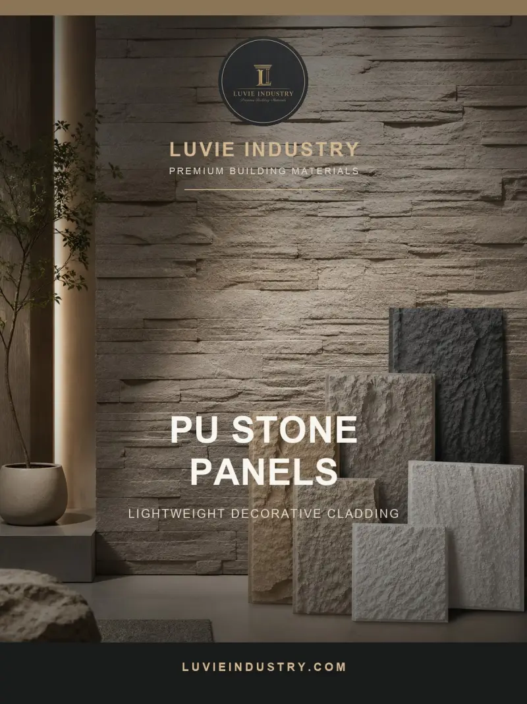

Are PU stone wall panels waterproof?
Lightweight PU stone panels can create a textured stone look, but “waterproof” can mean anything from wipe-clean face to a tested exterior cladding assembly. Buyers should write down the exposure first: an indoor lobby, a covered exterior feature wall and a rain-exposed facade need different decisions.

Do not assume the textured PU face makes the whole wall waterproof. Verify the exact panel’s approved use, test evidence and the specified joint, backing and fixing system for the proposed moisture exposure.
Separate decorative finish from weather barrier
Rainwater can enter through panel joints, cut edges, window returns and fastener penetrations. In a building envelope, the drainage plane and underlying weather barrier need their own design. A light panel can conceal a wet wall just as effectively as a heavy one. The EPA’s moisture-control guidance treats walls as assemblies whose water pathways must be designed, built and maintained.
Check indoor and outdoor variants
Some PU stone products may be sold for indoor decoration, while another construction is marketed for exterior use. Ask for the exact SKU, face coating, dimensions, substrate, fixing details and weathering evidence. Do not transfer a claim from a brochure family to a different thickness or color. At a project site, review sunlight, rain, temperature swings and local fire requirements together.
Approve a real junction detail
A panel in the middle of a sample wall may look convincing while the corner, parapet and window return remain unresolved. Request drawings for those details and a physical mock-up. Clarify who supplies sealants, trims, fasteners and weather barrier. If the supplier has evidence only for interior use, market it honestly as interior decoration until an exterior system is verified.
Illustrative buyer situation
A distributor is asked whether a lightweight PU stone panel can cover a rain-exposed entrance column. The same panel looked convincing on an interior sample board, but the project includes window returns and a horizontal top edge. Before quoting exterior use, the distributor should request the exact exterior approval, fixing and drainage details. The architect must show where water goes behind the finish. If that assembly cannot be documented, keep the product in an interior decorative role.
Buyer checklist before ordering
- Exact PU stone SKU and approved exposure
- Water-management layer behind the cladding
- Joint, edge and penetration details
- Weathering and fire evidence where required
Save the approved sample, product code and document references with the purchase order. A catalog helps shortlist a finish but does not establish the final specification, local acceptance, price or delivery terms.
Common buyer questions
Does a PU stone panel replace waterproofing?
No. The complete wall must manage water behind and around the decorative panel.
Can any PU stone panel be used on a facade?
No. Check exact-product exterior approval, fixing and local requirements.
What should an importer request?
Ask for the use statement, assembly detail and matching test evidence before quoting an exterior application.
Compare the range and request the exact specification
Browse the relevant product catalog (PDF, English), then tell Luvie the destination market, room or project use, approximate quantity and the finish you want to sample. We can discuss which current SKU and documents are available; do not assume a catalog image establishes certification or a guaranteed lead time.
Turn the question into a verifiable product brief.
Send the application and target market so the conversation starts with a specific product, sample and evidence request.
Ask Luvie about this use